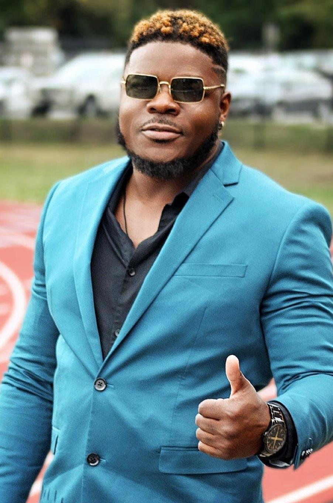
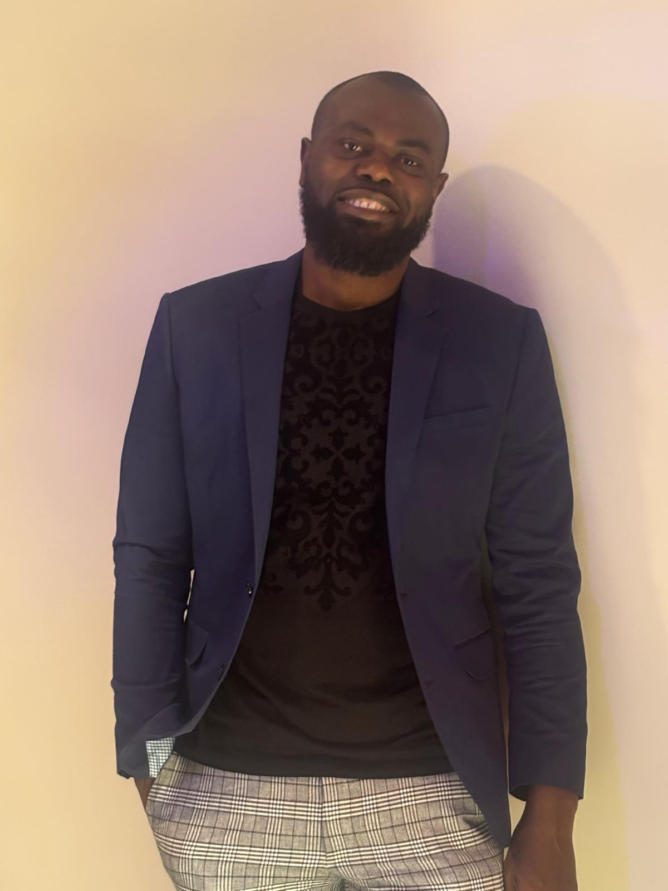
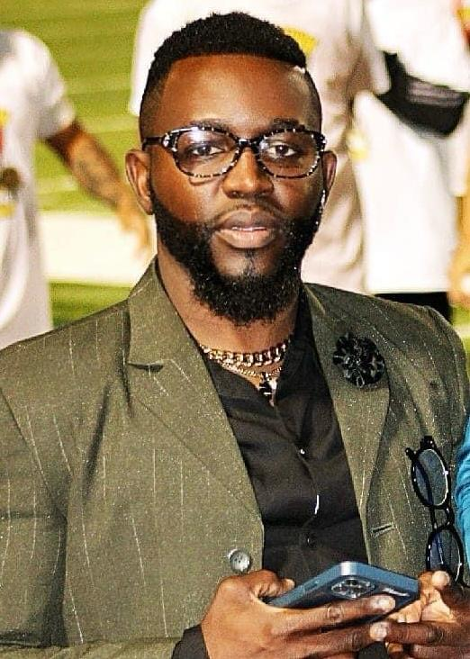
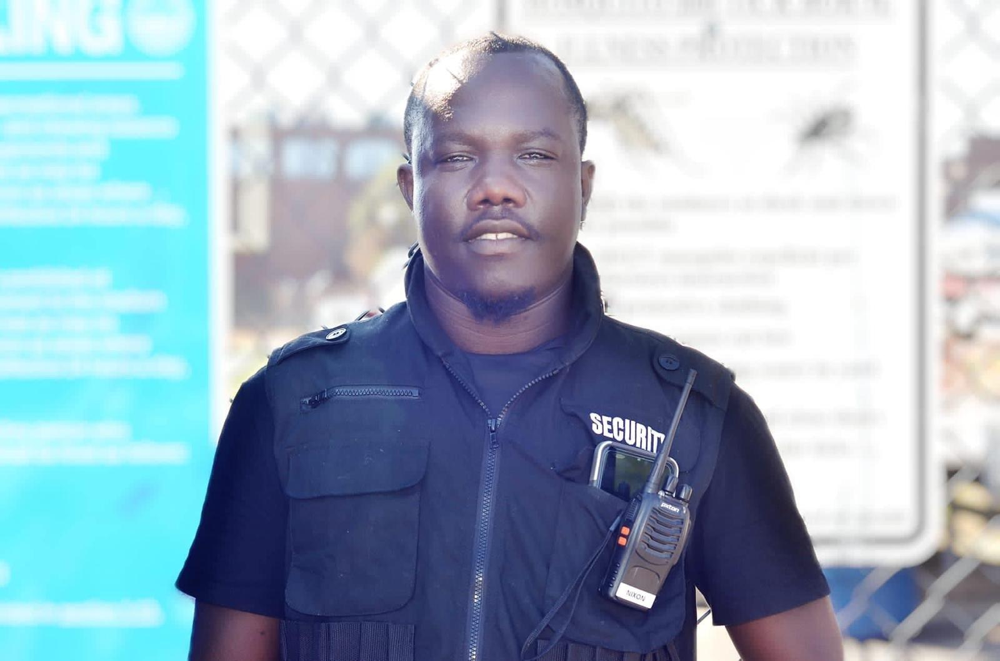
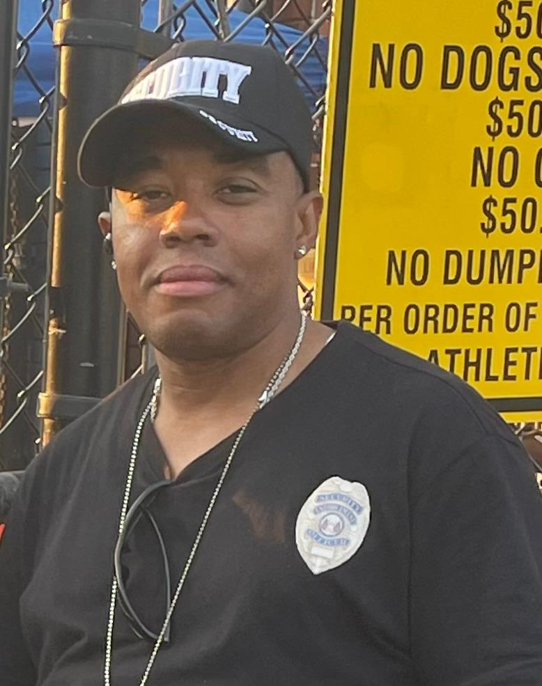
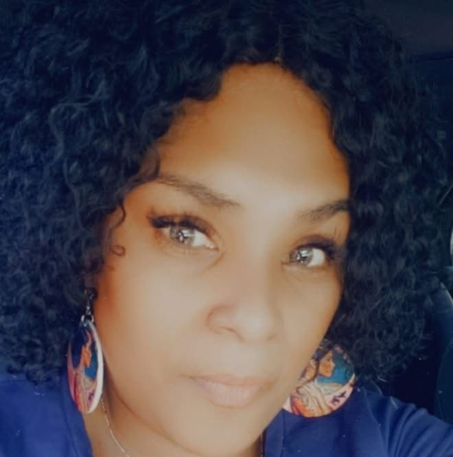

Conoce a nuestro equipo de liderazgo
Impulsando el éxito de la D-One Soccer League

Alens Ace Cenatus
Fundador y Presidente
Como Fundador y Presidente de la D-One Soccer League, Ace desempeña un papel fundamental en la gestión general y la dirección estratégica de la organización. Este puesto de liderazgo dinámico abarca una amplia gama de responsabilidades en varios departamentos, incluyendo seguridad, marketing, gestión de clubes/equipos de fútbol y gestión de proveedores.

Paul Georges
Vicepresidente y Comisionado
Como Vicepresidente y Comisionado de la D-One Soccer League, Paul supervisa las operaciones del día del partido, el registro de jugadores, la gestión de jugadores (a través de la aplicación Tapin), ventas y promoción, finanzas, planificación de eventos, cumplimiento de regulaciones y gestión del personal. Paul está comprometido a fomentar una cultura de deportividad, trabajo en equipo y excelencia mientras promueve el crecimiento del fútbol en la comunidad.

Nalby Junior Blot
Vicepresidente Adjunto
Como Vicepresidente Adjunto de la D-One Soccer League, Nalby desempeña un papel fundamental en la gestión efectiva y el funcionamiento de la liga. Sus responsabilidades incluyen administración de la liga, gestión de proveedores, patrocinio, ventas y coordinación con otros funcionarios de la liga para garantizar el buen funcionamiento de las operaciones diarias y la ejecución exitosa de los eventos de la liga.

Nixon Turenne
Jefe/Director de Seguridad
Como Jefe de Seguridad de la D-One Soccer League, Nixon trabaja estrechamente con los miembros de la liga para desarrollar planes de seguridad y supervisar al personal de seguridad para garantizar la seguridad de todos los eventos de la liga, incluidos partidos, torneos y eventos especiales.

Geraldo Oriol
Personal de Seguridad
Como miembro del personal de seguridad de la D-One Soccer League, Geraldo sigue los protocolos y procedimientos de seguridad para mitigar riesgos y mantener un entorno seguro para jugadores, espectadores y personal.

Dominique Belizaire
Oficial de Procesamiento de Efectivo y Jefe de Concesiones
Dominique desempeña un papel vital en hacer que los seguidores y espectadores se sientan bienvenidos. Como la primera cara vista en el puesto antes de entrar al estadio, Dominique es responsable de clasificar, contar, verificar y empacar el efectivo recolectado de clientes y proveedores durante partidos, torneos y eventos.